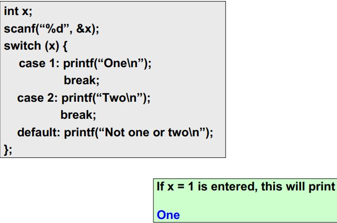

#include<stdio.h>
int main()
{
int num=19;
if(num<10)
{
// For Multiple statements with in if use curly bracket.{}
printf("Number is %d.\n",num);
printf("The value is less than 10");
}
else
{
printf("The value is greater than 10\n");
printf("Number is %d.\n",num);
}
return 0;
}
Output: The value is greater than 10 Number is 19.

Illustration 4.1
void main() {
int marks;
scanf("%d", &marks);
if (marks >= 80)
printf ("A") ;
else if (marks >= 70)
printf ("B") ;
else if (marks >= 60)
printf ("C") ;
else printf ("Failed") ;
}
Illustration 4.2
#include < stdio.h >
int main ()
{
int a = 1;
if( a < 10)
{
if( a == 1)
{
printf("Value of a is:%d\n",a);
}
else
{
printf("The value is greater than 100.");
}
}
else
{
printf("The value is greater than 10.");
}
return 0;
}
Output: Value of a is:1
This makes use of an expression that is either non-0 or 0.
An appropriate value is selected, depending on the value of the expression
Condition ? True Statement : False Statement
Note:if condition will true then true statement will be executed else false statement will be executed.
| #include<stdio.h> void main() { int marks=80; if (marks >= 60) printf("Passed \n"); else printf("Failed \n"); return 0; } |
#include<stdio.h> void main() { int marks=80; (marks >= 60) ? printf("Passed \n") : printf("Failed \n"); } |
| Output:Passed | Output:Passed |
|
#include<stdio.h> void main() { int a=5; int b=3; if((a >10) && (b < 5)) x = a + b; else x = a-b; printf("x=%d",x); return 0; } |
#include<stdio.h> void main() { int a=5; int b=3; x = ((a > 10) && (b < 5)) ? a + b : a-b printf("x=%d",x); } |
| Output:x=2 | Output:x=2 |
switch (expression) {
case const-expr-1: S-1
case const-expr-2: S-2
:
case const-expr-m: S-m
default: S
}
|
 |